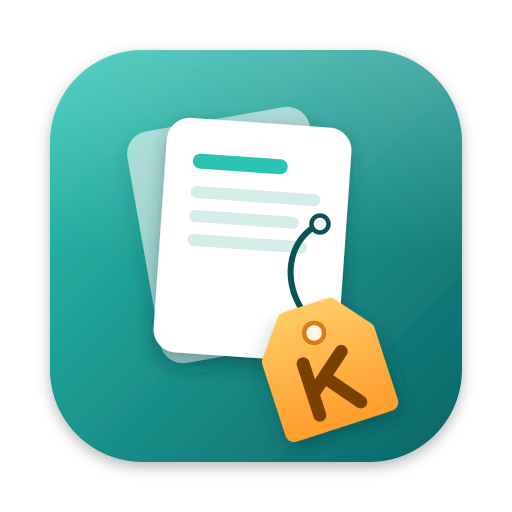

Kippet 是 Mac 上的剪贴板抽屉。在任何输入框按 ⌥⇧V，最近复制的文字、链接、图片和文件从屏幕底部滑出来，选一张按回车，直接贴回原处。
下载 Kippet不用注册，不用配置，打开后复制的东西就开始记下来。
打开下载的 DMG，把 Kippet 拖进「应用程序」文件夹。
菜单栏出现小标签图标，Kippet 就在后台记录了。系统询问时，允许它读取剪贴板。
在任何输入框按 ⌥⇧V，选一张卡片按回车。
常用的操作都有快捷键，手不用离开键盘。
横向卡片一眼扫过。方向键选卡，空格预览，直接打字就是搜索，⌘1–9 快贴前九项。
按 ⌥↩ 整理空白、格式化 JSON、去掉链接追踪参数，或粘贴为纯文本、Markdown、HTML。
颜色显示色块，代码带高亮，验证码单独突出。图片里的文字和二维码在本机识别，能搜到。
常用的加星标、归进带颜色的钉板。写好的片段按 ⌘N 存下，随时贴。
按来源或内容自动归档、加星、到期删除。验证码 2 分钟后清掉，密码管理器的内容默认不记。
先收集一串，回到输入框按 ⌃⌥V，一条接一条往下贴。
选一个 iCloud Drive 或其他云盘文件夹，收藏、钉板和片段自动同步。普通历史不离开本机。
clipshelf:// 链接接入快捷指令、Raycast。打开开关后，Claude、Cursor 可通过本机 MCP 查历史。
Kippet 没有账号，没有服务器，也不收集使用数据。
~/Library/Application Support/ClipShelf，不会上传。呼出快捷键可以在「设置 → 快捷键」里改。
macOS 14 Sonoma 及以上，Apple 芯片和 Intel 芯片的 Mac 都能用。
只用来在你选好卡片后替你按一下 ⌘V，把内容贴回原来的输入框。不开也能用，选好后自己按 ⌘V 就行。
密码管理器复制的内容带机密标记，Kippet 默认跳过。复制其他敏感内容前，可以从菜单栏「暂停记录」，或在设置里排除某个应用。
普通历史默认保留 1,000 条，可以在设置里按条数或天数调整。加星标和钉板里的内容不受这个限制。
从菜单栏退出 Kippet，把它从「应用程序」拖到废纸篓。想连历史一起删，再删除 ~/Library/Application Support/ClipShelf 文件夹。